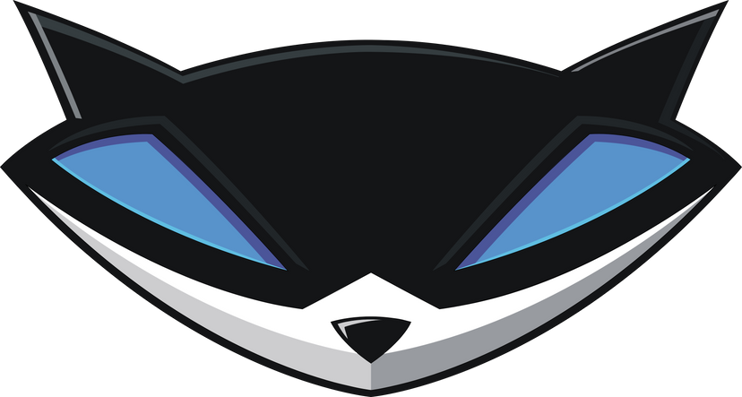

Sly Cooper Speedrun
HOME
VINKKEJÄ
YHTEISÖ
Speedrun.com
Sly Speedrun Discord
Pelien tämänhetkiset Top ajat
Sly Cooper and the Thievius Raccoonus
Sly 2: Band of Thieves
Sly 3: Honor Among Thieves
Sly Cooper: Thieves in Time
Pelisarjan trailer
Speedrun määritelmä